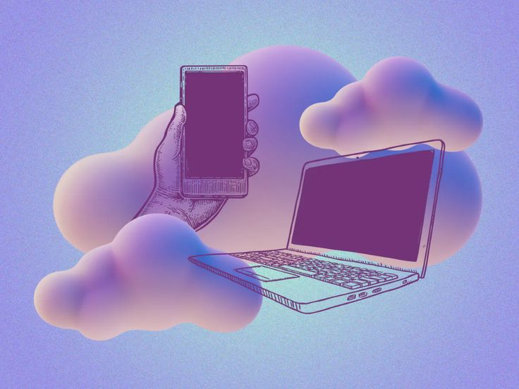

World Backup Day 2026
La Journée mondiale de la sauvegarde des données (World Backup Day) est célébrée chaque année le 31 mars. Son objectif principal est de sensibiliser le public et les entreprises à l'importance de protéger leurs informations numériques contre les pannes, les vols et les cyberattaques comme les rançongiciels.
World Backup Day is celebrated every year on March 31st. Its main goal is to raise awareness among the public and businesses about the importance of protecting their digital information against hardware failures, theft, and cyberattacks such as ransomware.
Dans le cadre de cette journée, j'ai eu le plaisir d'être invité par M. Rivel GANSE à la radio Kiff FM de la SRTB afin d'échanger autour de la sauvegarde des données et des bonnes pratiques numériques.
As part of this event, I had the pleasure of being invited by Mr. Rivel GANSE on Kiff FM, a radio station of the SRTB, to discuss data backup and digital best practices.

Questions abordées lors de l'interview Questions covered during the interview
Qu'est-ce que la donnée ? What is data?
Une donnée numérique est toute information dématérialisée que vous créez, stockez ou partagez à l'aide d'un appareil électronique (ordinateur, smartphone, tablette). C'est la trace numérique de votre vie quotidienne sous forme de fichiers sur nos machines. Exemples : photos, vidéos, musiques, e-mails, SMS, messages WhatsApp, publications sur les réseaux sociaux, identifiants, mots de passe, coordonnées bancaires.
Digital data is any dematerialized information that you create, store, or share using an electronic device (computer, smartphone, tablet). It is the digital footprint of your daily life in the form of files on our machines. Examples: photos, videos, music, e-mails, SMS, WhatsApp messages, social media posts, login credentials, passwords, bank details.
C'est quoi une sauvegarde ? What is a backup?
Une sauvegarde est une deuxième copie de tous vos fichiers importants. Au lieu de tout stocker à un seul endroit (le disque dur de votre ordinateur), vous gardez une autre copie ailleurs, en sécurité.
A backup is a second copy of all your important files. Instead of storing everything in one single place (your computer's hard drive), you keep another copy elsewhere, safely secured.
Pourquoi sauvegarder ? Why backup?
Vous avez déjà perdu votre téléphone, votre appareil photo ou votre tablette ? Vous venez de perdre des données. Vos données auraient pu être préservées si vous aviez fait une sauvegarde. Un petit accident, un petit imprévu, et vous pouvez perdre toutes les choses importantes à vos yeux.
Have you ever lost your phone, camera, or tablet? If so, you've lost data. Your data could have been preserved if you had made a backup. A small accident, an unexpected event, and you could lose everything that matters to you.
Comment et où sauvegarder ? How and where to backup?
Il existe deux types de solutions de stockage :
There are two types of storage solutions:
- Les solutions de stockage externes : disque dur externe, clé USB, carte mémoire, etc. External storage solutions: external hard drives, USB flash drives, memory cards, etc.
- Les solutions de stockage en ligne : telles que le "cloud", qui sont des services en ligne gratuits ou payants en fonction de la capacité souhaitée (ex: Google Drive, iCloud, Dropbox, etc.). Online storage solutions: such as the "cloud", which are online services that are free or paid depending on the required storage capacity (e.g., Google Drive, iCloud, Dropbox, etc.).
En pratique In practice
La règle d'or reste la méthode 3-2-1 : 3 copies de vos données, sur 2 supports différents, avec 1 copie hors site (Cloud ou autre lieu physique).
The golden rule remains the 3-2-1 method: 3 copies of your data, on 2 different media, with 1 copy offsite (Cloud or another physical location).
Extrait audio Audio excerpt
The interview was in french :(. Sorry for english readers.
Ce fut une interview assez spontanée et j'ai omis de dire beaucoup de choses ou de bien formuler certaines d'entre elles. Mais ce fut un réel plaisir de partager cela avec les auditeurs de Kiff FM !
It was quite a spontaneous interview, and I missed sharing a lot of things or framing some points perfectly. However, it was a real pleasure to share this with the listeners of Kiff FM!